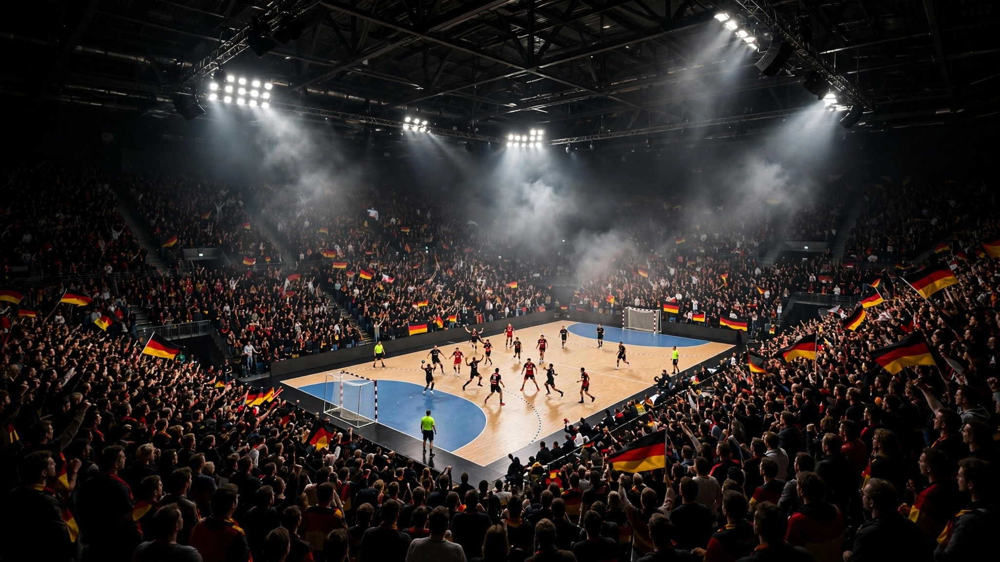

Tournament at a Glance
The Handball World Championship 2027 takes place from 13 to 31 January 2027 in Germany. The tournament runs for 19 days, from the opening matches on 13 January to the final on 31 January 2027.
Venues
Matches will be played in six venues across Germany:
- Munich
- Stuttgart
- Kiel
- Magdeburg
- Hanover
- Cologne
The final will be played in Cologne on 31 January 2027.
Germany’s Group Matches in Munich
Germany will play its group matches in Munich, with every match starting at 20:30:
| Date | Match | Time | Venue |
|---|---|---|---|
| 13 January 2027 | Germany vs Tunisia | 20:30 | Munich |
| 15 January 2027 | Germany vs Uruguay | 20:30 | Munich |
| 17 January 2027 | Germany vs Serbia | 20:30 | Munich |
Tickets
Day tickets for the Handball World Championship 2027 are available via EVENTIM. The final sales phase starts on 1 December 2026 at 12:00.
Plan ahead: popular matches, especially Germany’s games in Munich and the final in Cologne, are expected to sell quickly once the final sales phase opens.
How to Watch on TV and Stream
You can follow the tournament on free TV and by streaming in Germany:
- ProSieben
- ProSieben MAXX
- Joyn free stream
- Dyn – all 112 matches on Dyn
ProSieben, ProSieben MAXX and the Joyn free stream cover selected matches, while Dyn shows all 112 matches of the tournament.
Favourites
Denmark are the favourites for the Handball World Championship 2027. Denmark are chasing four titles in a row, having won the previous three world championships.
Official Information
For official information about the tournament, visit the official Handball World Championship 2027 website.
More fan guides
- DEV.to: Handball World Championship 2027 — Tickets, Venues and How to Watch
- GitBook: Handball World Championship 2027 Fan Guide
- Notion: Handball World Championship 2027 — Schedule, Tickets and How to Watch
- Flipboard: Handball World Championship 2027 magazine
- Pearltrees: Handball World Championship collection